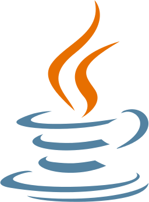
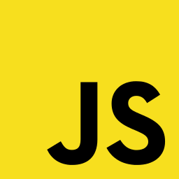

よく使う技術





大事にしていること
-
開発を通してプロダクトに関わる全員を幸せにすること
自分、チーム、自社(組織)、ユーザー(お客様)、協力会社、それぞれの家族など。
私が持てる技術でプロダクトを通して幸せにしたい。 -
もっとうまく開発するやり方を探し求め、分かちあい、見出していくこと
でも深刻にならず楽しみながらやっていく。 -
ITエンジニアの楽しさを共有すること
楽しく開発している人がいることを発信していきたい。
作ったもの
職務経歴の概要
2019年3月現在
ソフトウェア開発
-
Webアプリケーションの開発
- Java9年、PHP2年
-
Androidアプリの開発
- 5ヶ月
-
受託開発として案件契約から開発、保守運用までシステム開発業務における一通りの経験
- 見積、要件定義、設計、開発、テスト、リリース、保守運用を8年
-
インフラ
-
オンプレミスにてLinux、Windows Server、Solarisの、
Webサーバー、DBサーバー構築、運用経験を8年。 -
AWS + WordPressによるメディア系サイトの構築を2ヶ月。
EC2、RDS、CloudFront、S3、AWS CM、SMS。
-
オンプレミスにてLinux、Windows Server、Solarisの、
-
OS、DB、ミドルウェア使用経験
-
OS：
WindowsServer2010、
Linux(RedHat5、CentOS5、SUSE)、Solaris(9、10)
それぞれサーバー構築経験あり(インストール、初期設定、ミドルウェア設定など)
趣味でFreeBSDを使用している(構築経験はなし) -
DB：
PostgreSQL7年、MySQL4年、SQLServer1年
マルチバリューDBとして4D DAM(現在はAIDAM)3年、MySQLは趣味でも使用中2年。 -
ミドルウェア他ライブラリ：
VMWare、Apache(2系まで)、Tomcat(6系まで)、
chasen(形態素解析)、Imagix4d(リバースエンジニアリングツール)
-
OS：
-
マネジメント
-
2人～5人までのチームマネジメント経験
PLとして案件開発の担当、顧客との打ち合わせや折衝の経験あり10年
-
2人～5人までのチームマネジメント経験
-
その他の経験
- C/C++による組み込み開発1年
- Windowsサーバー構築(VMwareESXiによる仮想化、NW設定、バックアップ設定など)半年
- CLIツール開発(Linux/Shell、Windows/バッチ)
- その他言語経験(Perl、Tcl/Tk、basic、VB、AS3)
- 物流システム開発4年
- 趣味でamp、レスポンシブデザインのサイト開発の経験あり。
プログラミングスキル
-
Java
-
2007年から2016年までバージョン1.4～1.7を使用しServlet、JSPにてWeb開発を実施。
2018年9月からAndroidアプリ開発にて使用中。
また静的構造解析の対象として解析の経験もあり。
-
2007年から2016年までバージョン1.4～1.7を使用しServlet、JSPにてWeb開発を実施。
-
PHP
-
2016年から2年間使用。
業務でPHP5系を、趣味でPHP7系を使用している。
-
2016年から2年間使用。
-
jQuery
-
2016年から2年間1.4系、または1.7系でフロントエンド開発に使用。
jQuery Mobileの開発経験もあり。2016年まではJavaScriptにてフロントエンド開発を実施。
-
2016年から2年間1.4系、または1.7系でフロントエンド開発に使用。
-
C/C++
-
組み込み開発で1年経験あり。
静的構造解析の対象として5年間分析の経験あり。
関数呼び出しの可視化やC++クラス継承関係の可視化などを実施。
-
組み込み開発で1年経験あり。
職務経歴の詳細
現職：スマホアプリの開発(2018年09月～)
自社開発のスマホアプリについてメンバーとして主に開発を担当。
-
自社アプリのAndroid開発のメンバーとして以下の業務を実施。
言語はJava。- 詳細設計
- 開発
- テスト
- リリース
-
新規メディアサイトのインフラ構築として、
AWS + WordPress環境を構築。
以下のAWSの機能を使用し本番、Staginig環境を構築。- EC2
- VPC
- CloudFront
- S3
- Route53
- CodeCommit
- CodeDeploy
- CodePipeline
- Certificate Manager
- Simple Email Service
前職：旅行比較サイトの開発・運営(2016年06月～2018年08月)
プロジェクトリーダー(PL)またはメンバーを担当
開発プロジェクトによってはPLを担当した。
-
具体的に以下の業務を実施。
- 他部署(企画設計、営業)や契約先会社との連携(仕様確認、仕様調整など)
- 設計(要件から機能設計書の作成、詳細設計)
- 工程管理
- 工数見積
- 開発メンバーの管理(1人～2人)
- 開発
- テスト
- 保守運用(障害対応、調査、チューニングなど)
-
PLを担当した具体的な開発プロジェクトの内容については以下の通り。
-
スマホサイトリニューアル
サイト内の全メニューにおいてスマホサイトのリニューアルを実施した際、
主要メニューのひとつについてPLを担当。
デザイン変更、jQuery Mobileの撤廃、HTML5化などを実施。 -
提携サイトのスマホ対応
自社システムを利用した提携サイトスマホ対応のPLを担当。
上記のPL業務の他、スマホ化の要件定義を行い顧客との折衝も実施。
-
スマホサイトリニューアル
-
その他の業務
-
デグレード確認テストの自動化
Codeceptionを用いたテストの自動化 -
契約旅行会社サイトのクローリング(旅行商品情報の取得、在庫情報の更新など)
PhantomJSを用いたクローリングの実施 -
予実管理の見える化
プロジェクトの予算と実績からプロジェクト予実の見える化を半年かけて実施。
スライドにまとめての成果をシステム部(約50人)に向けて発表。 -
バッチ処理管理の移行(cronからRundeckへ)
バッチ処理を管理(スケジューラ)をcronからRundeckへ移行。 -
ソース管理システムの移行
SubversionからGitHubへの移行。
-
デグレード確認テストの自動化
1社目：SIerにてPLまたはメンバーを担当(2007年4月～2016年03月)
受託開発案件の見積・契約、設計、開発、保守・運用を担当。
開発プロジェクトによってはPLを担当した。
-
設計開発支援ツールの受託開発を担当(2007年4月～2012年11月)
お客様が開発している大規模製品(30年以上、人員200人以上が参加)において、
システム構造の見える化のためにソースコードの静的解析結果を、
イントラサイトで公開する設計開発支援ツールの開発を担当していた。
開発にはメンバーとして参加し開発プロジェクトによってはPLとして、以下の業務を実施。- お客様からの要件ヒアリング、要件定義
- お客様との定例(開発進捗報告など)
- 設計(要件から機能設計書の作成、詳細設計)
- 工程管理
- 工数見積
- 開発メンバーの工数管理(1人～2人)
- サーバー構築(OSインストールから設定まで)
- 開発
- テスト
- 保守運用(障害対応、調査、チューニングなど)
- 現地作業(リリース作業、サーバー構築)
具体的な実績、取り組みなど。-
システムの消費メモリ使用量低減と低減に伴う性能対策を実施。
最大ターンアラウンドタイム3秒を維持しながら、
2GB～8GB使用していたメモリを1GB以下に低減。 -
社内未経験のデータベースとプログラム言語の導入を担当。
有識者が居ない中6ヶ月ほどで機能開発を行いリリースを達成。
-
トラック離発着管理システムの改修と運用(2012年12月～2015年3月)
大手物流会社様向けにトラックなどの離発着予定と実績の入力・管理を行うシステム。
離発着予定の他、積載するコンテナの量も入力・管理が可能。
開発にはメンバーとして参加し、2013年3月からはPLとして以下の業務を実施。- お客様からの要件ヒアリング、要件定義
- お客様との定例(開発進捗報告など)
- 設計(要件から機能設計書の作成、詳細設計)
- 工程管理、工数見積
- 開発メンバーの工数管理(1人～2人)
- 現地作業(現地テスト、リリース)
- サーバー増強対応(サーバーやOS、ミドルウェア等の選定と発注)
- インフラ設計、構築(OS、ミドルウェアのインストールと設定、テスト)
- システム保守(ハードウェア、ソフトウェアの保守)
- 開発
- テスト
- 保守運用(障害対応、調査、チューニングなど)
- 現地作業(リリース作業、サーバー構築)
具体的な実績、取り組みなど。-
システムの全国展開対応を実施。
導入拠点数を500前後から全国3,000前後に増やすため、
サーバー増強と性能対策を実施し全国展開を達成。
サーバーは当初四台構成から十台まで増加対応を実施。 -
実績データダウンロード機能の性能対策
性能対策のため、日々の業務に影響が無い範囲で、
オンデマンド処理からバッチ処理への変更を実施。
-
大規模システムの障害アラート系とログ機能改修(2015年4月～2016年3月)
開発メンバーを担当。- 詳細設計
- 開発
- テスト
実績、取り組みなど。- 製品内に使用する200前後のコマンドに対してログ出力機能の改修を実施。
資格(習得時期)
- 認定スクラムマスター(2019年4月)
-
VMware CertifiedProfessional 5 - Data Center Virtualization(VCP5-DCV)
2013年12月取得(2015年12月更新) - 基本情報技術者試験(2007年5月)
- 第2種電気工事士(2004年10月)
- 普通自動車免許第一種（2005年8月）
アウトプット
プロダクト
-
Podcast『aozora.fm』の配信サイト改修
-
Yattecastテンプレートに以下の機能を追加
- chapter機能の追加
- 再生位置とchapterの背景色連動
- レジューム再生機能(ページを閉じる際に再生位置を記憶、復元する機能)
- スクロール時の再生エリア追従
- 告知内容が目立つようにレイアウト変更(レスポンシブ対応済み)
- RSSフィードに改修した機能の内容を追記
-
Yattecastテンプレートに以下の機能を追加
-
Androidアプリのサンプル開発
-
レガシーなアーキテクチャからの改善を目的に、
たたき台となるサンプルアプリを開発。
以下のアーキテクチャ、ライブラリなどを実装。- MVVMアーキテクチャ
- DataBinfding
- RxJava2
- RxBus
- Room
- okhhtp3
- RxJavaに対応したユニットテスト
-
レガシーなアーキテクチャからの改善を目的に、
-
ポートフォリオ(本サイト)
-
コンテンツの充実を優先し、
静的なHTMLテンプレートと簡単なJavaScript(Rioit.js)で構成。
-
コンテンツの充実を優先し、
登壇
| 日付とスライド | タイトル | 資料 |
|---|---|---|
|
2018年09月01日(土)
|
トキワの森LT大会 | 資料 |
|
2018年09月02日(日)
|
インフラ勉強会【ITエンジニア向け】WebプログラマがAndroidアプリ開発をやってみた【1から始める】 | 資料 |
|
2018年09月12日(水)
|
インフラ勉強会 問題地図シリーズ輪読会 第5回 「システムの問題地図 5丁目」 | 非公開 |
|
2018年11月09日(金)
|
IT技術書もくもく読書会 #1 | 資料 |
|
2018年11月10日(土)
|
インフラ勉強会 みんなで作るセッションリレー 「ITエンジニアのためのPodcastことはじめ。」 | 資料 |
|
2018年11月21日(水)
|
インフラ勉強会 問題地図シリーズ読書会 マネージャーの問題地図 1丁目 | 非公開 |
|
2018年11月28日(金)
|
#しがないラジオmeetup 2 | 資料 |
|
2018年12月27日(木)
|
エンジニアの登壇を応援する忘年LT大会 | 資料 |
|
2019年01月21日(木)
|
インフラ勉強会 #RSGT2019 の感想会 | 資料 |
|
2019年02月14日(木)
|
インフラ勉強会 ITエンジニアのためのPodcast公聴会 #aozorafm ep14 働き方について | 資料 |
|
2019年02月16日(土)
|
Laravel JP Conference 2019 PHPテストワークショップ | 資料 |
|
2019年02月20日(水)
|
失敗LT祭！ 〜俺の話を聞いてくれ〜 | 資料 |
|
2019年03月10日(日)
|
ドラクエに学ぶチームマネジメント読書会 第１章 チームビルディング | 非公開 |
|
2019年03月19日(火)
|
【とらのあな主催】オタクがKotlinを追うライトニングトークイベント | 資料 |
技術書
-
執筆中
-
「はじめる技術 つづける技術」
何かを始める、続けるための考え方や事例を書いたノウハウ本。
2019/04/14(日)の技術書展6、【え18】サークル「おからぼ」にて委託予定。
詳しくはこちら
-
「はじめる技術 つづける技術」
-
寄稿
-
ワンストップ見積もり
ITエンジニアがよくやるけどとても難しい見積もりについて、著者15人で書いたテクニック網羅本。
私は第4章、2点見積もりについて書きました。
-
ワンストップ見積もり
Podcast(一部趣味も含む)
-
パーソナリティ
-
aozora.fm
aozora.fmは仕事や趣味の楽しさを共有するpodcast。
-
aozora.fm
- ゲスト出演
ブログ/Qiita
-
はてなブログ 青空な日々
ITエンジニア関連で興味あることをアウトプットして共有したいブログ -
Qiita